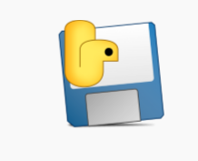
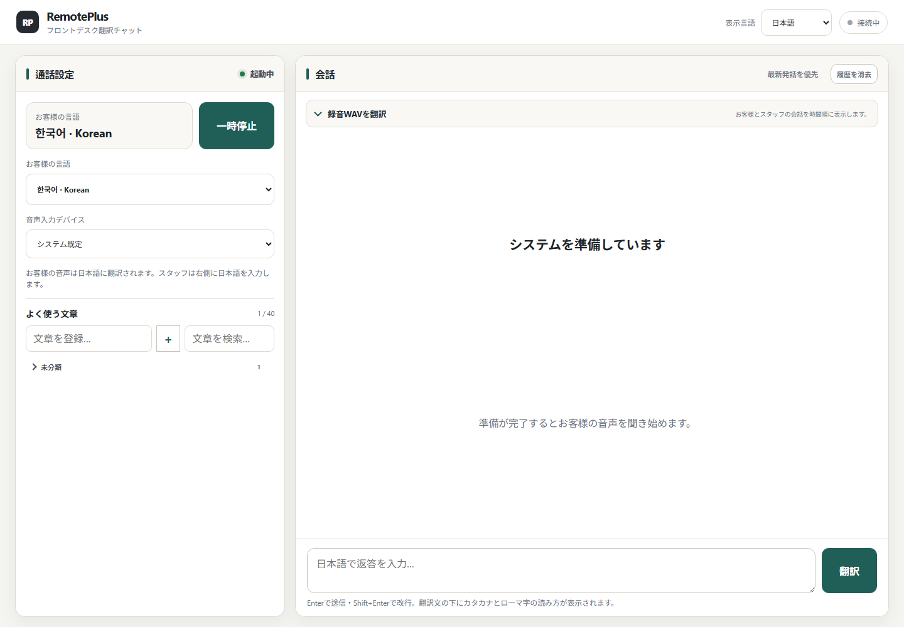
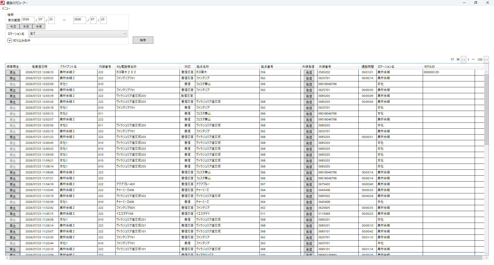

ホテルスタッフ向け
英語・韓国語などを
聞き取ります。
話した内容が
日本語で出ます。
日本語か英語で
返事を入力します。
翻訳はこのパソコンの中
通話音声はローカル処理
録音した会話を分析
名前は RemotePlus Translator です。

このアイコンを使います。
翻訳画面だけが開きます。
「準備中」の表示が消えたら始められます。
左に設定、右に会話が見えます。
準備中にアイコンを何度も押さないでください。

1 2 3お客様が話す言語を
1つ選びます。
ふつうは
「システム既定」でOK。
英語のお客様なら English、韓国語なら Korean を選びます。
お客様
原文が先に出て、そのあと日本語が出ます。
周りの音を拾う時に使います。
Enterでも送れます。Shift + Enterは改行です。
名前・日付・金額・部屋番号は、必ず目で確認します。
例：少々お待ちください。
一覧に保存されます。
見つからない時は「文章を検索…」を使います。
確認
予約
お詫び

ここが「再生」話す人をまちがえることがあります。原文と音声をいっしょに確認します。
WAV分析中はマイクが一時停止します。終わったら「再開」を押します。
English / Korean などが正しいか。
正しい入力デバイスか。
短く、はっきり、1人ずつ話す。
テレビや音楽から離れる。
「一時停止」を押し、マイクを見直します。
「短い文」でお願いすると成功しやすいです。
すでに起動中なら、画面が前に出ます。
モデルの準備中かもしれません。
黒い画面は自動で新しい画面に直します。
1分待ってから、アプリを閉じて開き直します。
1回だけ開き、画面が出るまで待ちます。
バックエンドも自動で終了します。
約5秒待ってください。
ほかの操作は必要ありません。
RemotePlus Translator 0.8.4
ホテル内利用向け・ローカル翻訳システム